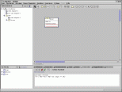
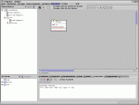
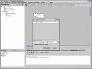
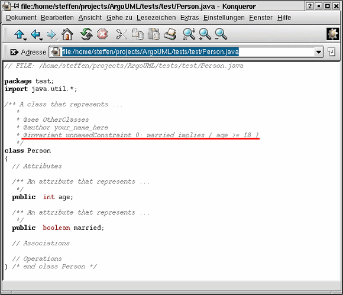
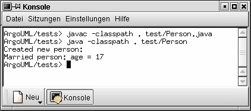
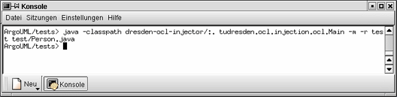
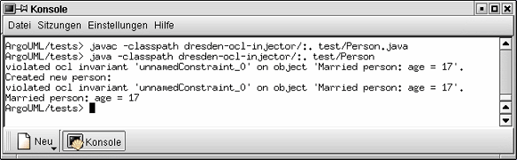

Argo/UML integration
step 1: create the project

After starting Argo/UML, create a UML diagramm and some additional OCL constraint:
step 2: generate Java code

Generate code for all classes by selecting the according menu item:

Specify the path where to store the generated classes and press "Generate":
The code has been generated (Person1.java) and looks like this:

step 3: personal modifications
Modify the code for your purposes, e.g. add constructor and main methode (Person2.java):
// FILE: /home/steffen/projects/ArgoUML/tests/test/Person.java
package test;
import java.util.*;
/** A class that represents ...
*
* @see OtherClasses
* @author your_name_here
* @invariant unnamedConstraint_0: married implies ( age >= 18 )
*/
class Person
{
// Attributes
/** An attribute that represents ...
*/
public int age;
/** An attribute that represents ...
*/
public boolean married;
// Associations
// Operations
public Person() {
super();
age = 17;
married = true;
}
public String toString() {
return
((married)?
("Married person"):
("Person")
) +
": age = " + age;
}
public static void main (String[] args) {
Person p = new Person();
System.out.println ("Created new person:");
System.out.println (p);
}
} /* end class Person */
|
step 4: run the example

Compile the source and start the program.
step 5: run the injector tool

Run the injector tool to modify the source according to the specified OCL
invariant
The resulting code looks like this (Person3.java):
// FILE: /home/steffen/projects/ArgoUML/tests/test/Person.java
package test;
import java.util.*;
/** A class that represents ...
*
* @see OtherClasses
* @author your_name_here
* @invariant unnamedConstraint_0: married implies ( age >= 18 )
*/
class Person
{
// Attributes
/** An attribute that represents ...
*/
public int age;
/** An attribute that represents ...
*/
public boolean married;
// Associations
// Operations
public Person(tudresden.ocl.injection.lib.WrapperDummy wrappedbyocl) {
super();
age = 17;
married = true;
}
public String toString_wrappedbyocl_test_Person() {
return
((married)?
("Married person"):
("Person")
) +
": age = " + age;
}
public static void main (String[] args) {
Person p = new Person();
System.out.println ("Created new person:");
System.out.println (p);
}
/**
A wrapper for injection. Generated automatically, DO NOT CHANGE!
@author ocl_injector
@see #Person(tudresden.ocl.injection.lib.WrapperDummy)
*/public Person(){
this((tudresden.ocl.injection.lib.WrapperDummy)null);
try{tudresden.ocl.injection.ocl.lib.Invariant.checking_flag=true;
tudresden.ocl.injection.ocl.lib.Invariant.checkVacantInvariants();
}finally{tudresden.ocl.injection.ocl.lib.Invariant.checking_flag=false;}
}/**
A wrapper for injection. Generated automatically, DO NOT CHANGE!
@author ocl_injector
@see #toString_wrappedbyocl_test_Person()
*/public String toString(){
String result;
if(tudresden.ocl.injection.ocl.lib.Invariant.checking_flag)
result=toString_wrappedbyocl_test_Person();
else{
checkForChangedFeatures();
try{tudresden.ocl.injection.ocl.lib.Invariant.checking_flag=true;
tudresden.ocl.injection.ocl.lib.Invariant.checkVacantInvariants();
}finally{tudresden.ocl.injection.ocl.lib.Invariant.checking_flag=false;}
result=toString_wrappedbyocl_test_Person();
checkForChangedFeatures();
try{tudresden.ocl.injection.ocl.lib.Invariant.checking_flag=true;
tudresden.ocl.injection.ocl.lib.Invariant.checkVacantInvariants();
}finally{tudresden.ocl.injection.ocl.lib.Invariant.checking_flag=false;}
}
return result;
}/**
A backup for detecting modifications. Generated automatically, DO NOT CHANGE!
@author ocl_injector
@see #age
*/private int age_oclbackup812374=age;/**
Contains observers for modifications of this feature. Generated automatically,
DO NOT CHANGE!
@author ocl_injector
@see #age
*/public final java.util.HashSet age_oclobservinginvariants812374=new
java.util.HashSet();/**
A backup for detecting modifications. Generated automatically, DO NOT CHANGE!
@author ocl_injector
@see #married
*/private boolean married_oclbackup812374=married;/**
Contains observers for modifications of this feature. Generated automatically,
DO NOT CHANGE!
@author ocl_injector
@see #married
*/public final java.util.HashSet married_oclobservinginvariants812374=new
java.util.HashSet();/**
Checks object features, whether they have changed. Generated automatically, DO
NOT CHANGE!
@author ocl_injector
*/private void checkForChangedFeatures(){
if(age!=age_oclbackup812374){age_oclbackup812374=age;
tudresden.ocl.injection.ocl.lib.Invariant.notifyObservingInvariants(
age_oclobservinginvariants812374);
}
if(married!=married_oclbackup812374){married_oclbackup812374=married;
tudresden.ocl.injection.ocl.lib.Invariant.notifyObservingInvariants(
married_oclobservinginvariants812374);
}
}/**
An object representing ocl invariant unnamedConstraint_0 on this object.
Generated automatically, DO NOT CHANGE!
@author ocl_injector
*/private final tudresden.ocl.injection.ocl.lib.Invariant
zzzCheckOclInvariantObject812374_unnamedConstraint_0=new
tudresden.ocl.injection.ocl.lib.Invariant("unnamedConstraint_0", this);/**
Checks ocl invariant unnamedConstraint_0 on this object. Generated
automatically, DO NOT CHANGE!
@author ocl_injector
*/public final void zzzCheckOclInvariantMethod812374_unnamedConstraint_0(){
tudresden.ocl.lib.OclAnyImpl.setFeatureListener(
zzzCheckOclInvariantObject812374_unnamedConstraint_0);
final tudresden.ocl.lib.OclAnyImpl
tudOclNode0=tudresden.ocl.lib.Ocl.toOclAnyImpl(
tudresden.ocl.lib.Ocl.getFor(this) );
final tudresden.ocl.lib.OclBoolean
tudOclNode1=tudresden.ocl.lib.Ocl.toOclBoolean(tudOclNode0.getFeature("married"));
final tudresden.ocl.lib.OclInteger
tudOclNode2=tudresden.ocl.lib.Ocl.toOclInteger(tudOclNode0.getFeature("age"));
final tudresden.ocl.lib.OclInteger tudOclNode3=new
tudresden.ocl.lib.OclInteger(18);
final tudresden.ocl.lib.OclBoolean
tudOclNode4=tudOclNode2.isGreaterEqual(tudOclNode3);
final tudresden.ocl.lib.OclBoolean tudOclNode5=tudOclNode1.implies(tudOclNode4);
tudresden.ocl.lib.OclAnyImpl.clearFeatureListener();
if(!tudOclNode5.isTrue())System.out.println("violated ocl invariant
'unnamedConstraint_0' on object '"+this+"'.");
}} /* end class Person */
|
step 6: run the example again

Compile and start again.
{kind=link}
{kind=link}
{kind=link}